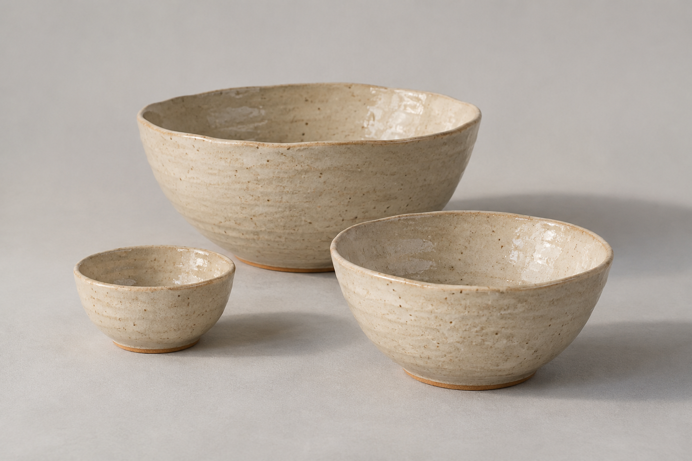

01 — A taçaGrés feito à roda

Uma família, três tamanhos.
O gesto e a matéria
Grés, mãos e roda.
Uma forma simples para voltar à mesa.
A coleção do quotidiano
Taça de
todos os dias.
Para a primeira refeição, para a sopa, para partilhar. Grés feito à roda, com um vidrado claro cor de aveia.
- Material
- Grés
- Acabamento
- Vidrado aveia
- Processo
- Feita à roda, à mão